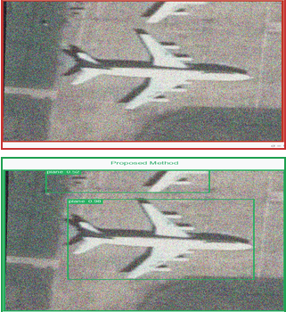

Distilling the relational structure of DINOv2 (ViT) into a lightweight YOLOv8 (CNN) detector — so it keeps seeing through sensor noise.
위성·항공 영상의 센서 노이즈 환경에서 경량 탐지기의 강건성을 이종 관계 지식증류로 확보
ML & all code: Juhyeok Park · data/docs: Jiwon Lee · advisor: Prof. Hyeongwon Kim · Capstone, Chungbuk National University
Same aircraft tile, increasing Gaussian noise. Top = Baseline (plain transfer learning). Bottom = Proposed (DINOv2→YOLOv8 relational KD). Drag the slider.

At σ=0.3 the baseline drops to mAP50 0.009 (near-total failure); the proposed model holds 0.196 — and is better on clean data too. Qualitative tile from iSAID validation (P1130).
Noise corrupts individual feature magnitudes, but the relational geometry between samples — encoded by a large self-supervised foundation model — is more stable. We transfer that geometry into a small detector via a distance-wise relational loss.
Student (YOLOv8s) ──SPPF feature──▶ Adapter (MLP) ──┐
├──▶ distance-wise RKD loss
Teacher (DINOv2, frozen, clean input) ──CLS token──┘
Total loss = YOLO(det+seg) + λ · RKD (λ = 0.5)
At inference: teacher + adapter removed → plain YOLOv8s-seg (zero overhead).
| Condition | Clean mAP50 | Noisy mAP50 (σ=0.3) |
|---|---|---|
| BaseLine0 (plain transfer) | 0.2775 | 0.0090 |
| N1_MIXED (proposed) | 0.4264 | 0.1961 |
| Condition | KD | Noise | Clean | Noisy | KD Δ (Clean) |
|---|---|---|---|---|---|
| BaseLine0 | ✗ | ✗ | 0.1243 | 0.0152 | — |
| C1 | ✅ | ✗ | 0.2849 | 0.0390 | +0.1606 |
| A_NOISY | ✗ | ✅ | 0.1386 | 0.1728 | — |
| N1_MIXED | ✅ | ✅ | 0.2277 | 0.1799 | +0.0897 |
KD alone (C1) lifts clean mAP50 by +0.1606 → heterogeneous ViT→CNN transfer is effective. The two strategies are complementary, not a trade-off. All numbers are single-seed (seed=0) runs.
git clone https://github.com/nonojamjam/noise-robust-detection-rkd cd noise-robust-detection-rkd pip install -r requirements.txt # Edit the CONFIG block in src/n1mixed_kd_trainer.py # (checkpoint path + dataset yaml), then: python -c "from src.n1mixed_kd_trainer import run_n1mixed; run_n1mixed()"
The DINOv2 teacher is fetched automatically via torch.hub. Trained on a Kaggle A100 (Ultralytics 8.4.62+, iSAID YOLO-seg format).
All ML and code by Juhyeok Park: the distance-wise RKD loss, a custom Ultralytics trainer (SPPF hook + MLP adapter + mixed-noise injection), and three framework-level fixes that unblocked training (model.loss wrapping, optimizer param-group mismatch on resume, adapter-sidecar save/load), plus the ablation and evaluation design.
Limits (kept honest): single seed, Gaussian noise + iSAID only, λ fixed at 0.5. Next: multi-seed + λ sweep, cross-dataset (DOTA/xView) & compound degradation, and federated-learning integration for data that can't leave the node (a SCAFFOLD/FedAvg prototype exists; exploratory, not in the benchmark above).
View the code on GitHub →